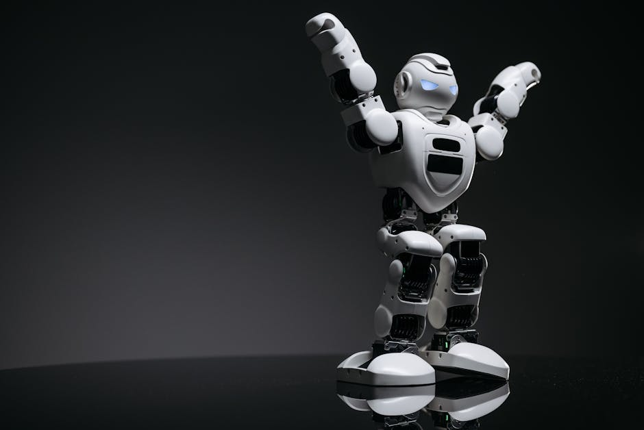

Imagine a world where robots don't just assemble cars in factories, but walk alongside us, assist in our homes, or even explore distant planets. This isn't just science fiction anymore! The dream of creating machines that look, move, and even think like humans is rapidly becoming a reality, thanks to incredible advancements in humanoid robots and Artificial Intelligence (AI). From agile parkour masters to potential household helpers, these bipedal wonders are pushing the boundaries of what's possible, and they're set to redefine our future. Let's dive into the fascinating world where metal meets mind!
What Exactly Are Humanoid Robots?
At its core, a humanoid robot is a robot designed to resemble the human body. This usually means having a torso, a head, two arms, and two legs, allowing for bipedal locomotion – the ability to walk on two feet, just like us! But it's not just about looks; the humanoid form is incredibly versatile for navigating environments built for humans, using human tools, and interacting with us in a more intuitive way.
Unlike industrial robots fixed in place or wheeled delivery bots, humanoids are built for dynamic interaction with complex, unpredictable surroundings. This makes their design and control incredibly challenging, requiring a blend of sophisticated mechanical engineering, advanced sensor technology, and cutting-edge artificial intelligence.
The Brains Behind the Brawn: How AI Powers Humanoids
A robot's body is just a shell without a brain. This is where Artificial Intelligence (AI) comes in. AI is the secret sauce that allows humanoid robots to:
- Perceive their environment: Using cameras, depth sensors (like Lidar), and microphones to "see" and "hear."
- Understand and interpret data: Making sense of what they perceive – identifying objects, recognizing faces, understanding spoken commands.
- Make decisions: Planning movements, choosing actions, and adapting to unexpected situations.
- Learn and improve: Getting better at tasks over time through experience and training.
Without AI, a humanoid robot would just be a very complex, inert statue. With AI, it becomes an intelligent agent capable of interacting with the world.
Leading the Charge: Innovators in Humanoid Robotics
When we talk about groundbreaking humanoid robots, two names often come to mind, each with a unique approach to the future of these machines:
Boston Dynamics' Atlas: The Parkour Master
If you've ever watched videos of robots doing backflips, parkour, or navigating complex obstacle courses with incredible agility, you've likely seen Atlas from Boston Dynamics. Atlas is arguably one of the most advanced research platforms for bipedal robots in the world. Its hydraulic actuators give it immense strength and speed, while sophisticated control algorithms allow it to balance, jump, and run with astonishing grace.
"Boston Dynamics' work with Atlas showcases the pinnacle of dynamic balance and locomotion in humanoid robots. It's a testament to how advanced control systems can enable machines to perform tasks previously thought impossible for robots."
Atlas isn't designed for mass production or commercial sale yet; it's a research platform pushing the boundaries of what's physically possible for a humanoid robot, constantly redefining our understanding of robot mobility and dexterity.
Tesla Optimus: A Robot for Every Home?
On the other end of the spectrum is Tesla Optimus, a humanoid robot project with a very different goal: to create a general-purpose, affordable, and mass-producible humanoid robot that can perform useful tasks in homes and factories. Tesla's vision is to leverage its expertise in AI, electric motors, and manufacturing to bring humanoids to the mainstream.
Optimus is designed to be less agile than Atlas but more practical for everyday tasks. It aims to integrate seamlessly into human environments, potentially assisting with chores, manufacturing, or even caregiving. The focus here is on robust, safe, and adaptable human-robot interaction for widespread adoption.
The Dance of Engineering: Challenges in Humanoid Design
Building a humanoid robot is an engineering marvel, fraught with challenges:
- Mastering Bipedal Locomotion: Walking on two legs is incredibly complex. It requires constant balance adjustments, adapting to uneven terrain, and dealing with external forces. A simple slip for a human can be a catastrophic fall for a robot.
- Power and Endurance: All those motors and sensors consume a lot of energy. Making a humanoid robot operate for extended periods without needing a recharge is a significant hurdle.
- Dexterity and Manipulation: Giving robots hands that can grasp a variety of objects, from delicate glassware to heavy tools, with the right amount of force and precision is extremely difficult.
- Seamless Human-Robot Interaction: For humanoids to be truly useful, they need to understand human intentions, respond appropriately, and operate safely alongside us. This involves natural language processing, gesture recognition, and ethical considerations.
AI's Role in Bringing Humanoids to Life
AI isn't just a component; it's the core operating system for humanoids. Here's how it makes them smarter:
Perception and Understanding
Humanoids use a variety of sensors to build a "picture" of their world:
- Vision Systems: Cameras (often multiple, like our eyes) feed data to AI algorithms that can identify objects, track movement, and map the environment.
- Depth Sensors (Lidar/Radar): These help robots understand distances and create 3D models of their surroundings, crucial for navigation and avoiding obstacles.
- Tactile Sensors: Located in hands and feet, these provide feedback on touch and pressure, allowing for delicate manipulation and stable standing.
AI processes this raw sensor data, turning it into meaningful information the robot can use to make decisions.
Decision Making and Learning
Once a humanoid perceives its environment, AI algorithms kick in to decide what to do next. This involves:
- Path Planning: Calculating the safest and most efficient route to a destination.
- Task Execution: Breaking down complex tasks (like "make tea") into smaller, manageable steps (go to kitchen, pick up kettle, fill with water, etc.).
- Reinforcement Learning: A type of AI where robots learn by trial and error, getting "rewards" for correct actions and "penalties" for incorrect ones, gradually improving their performance.
Here’s a simplified example of how a robot might make a decision based on its sensor input:
# Simple decision-making logic for a humanoid robot
def decide_action(sensor_data):
if sensor_data["distance_to_obstacle"] < 0.5: # Obstacle within 0.5 meters
print("Obstacle detected! Initiating evasive maneuver.")
return "EVADE_OBSTACLE"
elif sensor_data["object_detected"] == "tool_box":
print("Toolbox detected! Approaching to pick up.")
return "PICK_UP_TOOLBOX"
else:
print("No immediate task or obstacle. Continue patrolling.")
return "CONTINUE_PATROL"
# Example usage with simulated sensor data
current_sensors = {
"distance_to_obstacle": 2.0,
"object_detected": "tool_box"
}
robot_action = decide_action(current_sensors)
print(f"Robot decides to: {robot_action}")
# In a real robot, this action would trigger specific motor commands and movements.
This snippet shows how a robot can use simple logic to interpret sensor data and choose an appropriate action, a fundamental concept in robotics AI.
The Future is Here: Your Role in Shaping It!
The journey of humanoid robots is just beginning. Imagine them assisting in hospitals, performing dangerous tasks in disaster zones, or even serving as companions for the elderly. The potential applications are vast and exciting.
As students and enthusiasts in India, you are at the forefront of this technological revolution. The skills needed to build and program these incredible machines – coding, electronics, mechanical design, and critical thinking – are exactly what STEM education aims to foster. Whether it's designing a better gripper, writing a smarter AI algorithm, or envisioning new ways humanoids can help society, your creativity and innovation will be key.
Conclusion
From the breathtaking acrobatics of Boston Dynamics' Atlas to the ambitious vision of Tesla Optimus, humanoid robots are no longer confined to the pages of science fiction. They represent a powerful convergence of advanced robotics and intelligent AI, promising a future where machines can truly operate in our world, alongside us. The challenges are immense, but the progress is even more astonishing.
At MakerWorks, we believe that understanding these technologies is crucial for building the future. Are you ready to explore the world of bipedal robots, AI, and human-robot interaction? Join us in our labs and workshops to turn your curiosity into creation. The next generation of humanoid innovators starts with you!